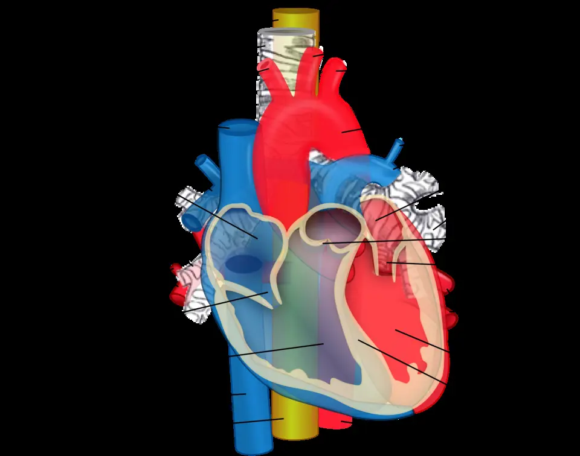
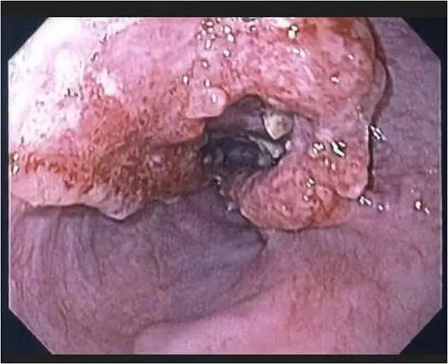
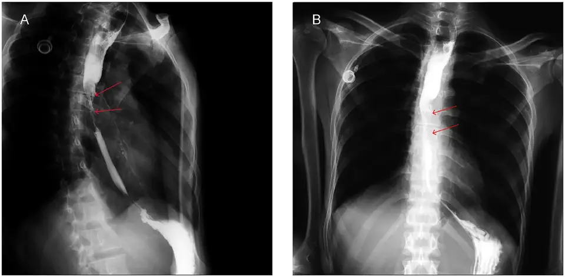

DX.6 — Cancer de l’œsophage
Une dysphagie qui progresse en quelques semaines, d'abord aux solides, chez un patient qui maigrit, impose une œsogastroduodénoscopie rapide avec biopsiesS1S6. Le cancer de l'œsophage laisse une survie à 5 ans de 15 à 25 %, car il essaime tôt par voie lymphatique et vasculaireS3. Chaque dossier passe en colloque multidisciplinaire, qui choisit entre résection endoscopique, traitement néoadjuvant puis chirurgie, radiochimiothérapie ou soins palliatifsS4.
1. Définition
Le cancer de l'œsophage est une tumeur maligne de l'œsophage, que les chirurgiens des Hôpitaux universitaires de Genève divisent en 2023 en deux types histologiques principauxS4. Le carcinome épidermoïde naît des cellules squameuses qui tapissent l'œsophage normalS4. L'adénocarcinome provient de cellules glandulaires normalement absentes de l'œsophage, apparues le plus souvent sur un œsophage de BarrettS4.
2. Épidémiologie (Suisse, puis Europe)
La Suisse compte près de 600 nouveaux cas par an, soit un peu plus de 1 % de tous les cancers, et les hommes forment trois quarts des maladesS1. Selon l'Office fédéral de la statistique, 450 hommes et 140 femmes recevaient ce diagnostic chaque année entre 2013 et 2017S4. Près de la moitié des patients ont 70 ans ou plus au diagnosticS1. Dans le monde, ce cancer occupe le huitième rang, avec environ 572 000 nouveaux cas par an, dont plus de 75 % en AsieS4. Les chiffres suisses et européens, l'évolution et les enjeux de santé publique expliquent pourquoi toute dysphagie progressive de l'adulte âgé doit être explorée sans attendre.
Chiffres suisses, puis européens
Les chiffres suisses viennent de la Ligue contre le cancer, de l'Office fédéral de la statistique et des registres cantonaux réunis par l'institut national d'épidémiologie du cancerS1S4S5.
| Donnée | Valeur | Population, période | Source |
|---|---|---|---|
| Nouveaux cas annuels | Près de 600, un peu plus de 1 % des cancers | Suisse | Ligue suisse contre le cancer [S1] |
| Nouveaux cas par sexe | 450 hommes et 140 femmes par an | Suisse, 2013-2017 | OFS (Office fédéral de la statistique), cité par Chevallay 2023 [S4] |
| Âge au diagnostic | 46 % de 50 à 69 ans ; près de 50 % à 70 ans ou plus | Suisse | Ligue suisse contre le cancer [S1] |
| Incidence de l'adénocarcinome | 0,8 puis 3,9 pour 100 000 années-personnes | Hommes de Suisse alémanique, 1982-1987 puis 2007-2011 | Feller 2015 [S5] |
| Carcinome épidermoïde masculin | Baisse d'environ 1,5 % par an | Suisse, 1982-2011 | Feller 2015 [S5] |
| Mortalité masculine | Baisse de 24 % | Suisse, 1988-2017 | OFS, cité par Chevallay 2023 [S4] |
| Nouveaux cas en Europe | De 48 000 à 75 000 par an | Europe, en 30 ans | Chevallay 2023 [S4] |
L'adénocarcinome a progressé dans les deux sexes et les deux régions linguistiques, avec une hausse annuelle de 6,8 % chez les hommes de Suisse alémaniqueS5. Cette évolution suit la hausse de l'obésité et du reflux gastro-œsophagien dans la population occidentaleS4. Le carcinome épidermoïde féminin augmentait au contraire légèrement en Suisse alémanique, de 1,4 % par anS5.
Histoire naturelle et pronostic
La dysphagie apparaît d'abord pour les seuls aliments solides, lorsque la tumeur rétrécit la lumièreS1. Entre 17 et 34 % des patients se présentent déjà avec des métastasesS4. Les métastases lymphatiques et vasculaires précoces expliquent une survie à 5 ans de 15 à 25 %, malgré les traitements multimodauxS3. Comparée aux autres pays européens, la Suisse a toutefois le meilleur taux de survie selon l'Office fédéral de la statistiqueS4.
Enjeux de santé publique
Le tabagisme, la consommation élevée d'alcool et le surpoids augmentent le risque, selon la Ligue suisse contre le cancerS1. Le reflux chronique et l'obésité alimentent la hausse de l'adénocarcinome, devenu le type le plus fréquent selon les HUG (Hôpitaux universitaires de Genève)S2S4. La chirurgie œsophagienne reste une intervention majeure, dont les meilleurs résultats proviennent de centres à haut volumeS4.
3. Physiopathologie
L'œsophage traverse le cou et le médiastin au contact de la trachée et de l'aorte, ce que la base à connaître montre sur un schéma publié en couleurS10S11. Le carcinome épidermoïde provient d'un épithélium squameux agressé par l'alcool et le tabac, alors que l'adénocarcinome provient d'une métaplasie de Barrett entretenue par le refluxS3. La tumeur rétrécit la lumière, puis envahit la paroi et les organes voisins, avant de gagner les ganglions et le foieS3. La chaîne en quatre temps et la corrélation avec les examens et les traitements relient chaque étape à un geste.
Base à connaître — trajet, paroi et voisins de l'œsophage
L'œsophage est un tube musculaire d'environ 25,4 cm, situé derrière la trachée, qui suit un trajet presque rectiligne dans le médiastinS10. Il entre dans l'abdomen par le hiatus œsophagien du diaphragme, puis s'abouche dans l'estomac au niveau du sphincter inférieurS10. Sa couche la plus superficielle est une adventice et non une séreuse, ce qui le prive de la barrière que possèdent l'estomac et l'intestinS10. Ce cancer métastase tôt par voie lymphatique et vasculaire, et sa paroi dépourvue de séreuse touche directement les organes du médiastinS10S3.
Le voisinage explique les complications : une tumeur au niveau ou au-dessus de la carène peut envahir l'arbre trachéobronchique, d'où la bronchoscopie avant traitementS3. Une fistule entre l'œsophage et la trachée provoque une toux à la déglutition et des pneumonies d'aspiration, ce qui impose sa fermeture par prothèseS8S3.
Relations de l'œsophage dans le thorax : ce schéma en couleur, en vue antérieure, rend transparents le cœur et les vaisseaux pour montrer l'œsophage, en jaune, derrière euxS11.

Le schéma brut montre les structures superposées : le lecteur y suit d'abord le tube jaune de haut en bas.
Sur la copie annotée, œuvre dérivée sous la même licence, cinq repères rouges suivent l'œsophage de haut en bas.
- Le repère un montre l'œsophage cervical, en jaune, qui descend en arrière de la trachéeS11S10.
- Le repère deux montre la trachée annelée, placée juste devant l'œsophage, que la tumeur peut envahir ou fistuliserS11S3.
- Le repère trois montre la crosse de l'aorte, qui croise l'œsophage dans le médiastin supérieurS11.
- Le repère quatre montre l'œsophage qui passe derrière le cœur, où le schéma le rend visible par transparenceS11.
- Le repère cinq montre l'œsophage distal qui gagne le hiatus, siège des adénocarcinomes liés au refluxS11S3.
Ce schéma est attribué à Mikael Häggström, d'après un original de ZooFari, et il est publié sous licence CC BY-SA 3.0 sur Wikimedia Commons, consulté le 12.11.2026S11.
Chaîne en quatre temps
| Temps | Carcinome épidermoïde | Adénocarcinome | Traduction clinique |
|---|---|---|---|
| Amorce | Alcool et tabac lèsent l'épithélium squameux ; tumeur ORL (oto-rhino-laryngologie) associée possible [S3] | Le reflux remplace l'épithélium par une métaplasie intestinale de Barrett [S3] | Le patient ne ressent encore rien |
| Développement | Dysplasie puis cancer limité à la muqueuse [S4] | Dysplasie de bas puis de haut grade, puis adénocarcinome T1a [S9] | Lésion visible seulement à l'endoscopie |
| Installation | Invasion de la sous-muqueuse et des ganglions, risque ganglionnaire plus élevé [S4] | Invasion sous-muqueuse au-delà de 500 µm : haut risque [S9] | Dysphagie aux solides, amaigrissement [S1] |
| Maintien | Envahissement trachéobronchique, fistule [S3][S8] | Métastases hépatiques ou péritonéales [S3] | Aspiration, hémorragie, dénutrition [S3] |
Corrélation : perturbation, exploration, thérapeutique
| Perturbation | Exploration qui la montre | Thérapeutique qui la corrige |
|---|---|---|
| Dysplasie sur Barrett | Endoscopie avec biopsies des quatre quadrants [S9] | Ablation endoscopique [S9] |
| Cancer limité à la muqueuse | Endoscopie, échoendoscopie [S4] | Résection endoscopique, mucosectomie ou dissection sous-muqueuse [S4] |
| Tumeur localement avancée | Échoendoscopie, TDM (tomodensitométrie), TEP-TDM [S3][S4] | Traitement néoadjuvant puis œsophagectomie [S4] |
| Maladie résiduelle après traitement néoadjuvant | Examen de la pièce opératoire [S14] | Nivolumab adjuvant [S14] |
| Obstruction tumorale | Endoscopie, transit baryté [S13] | Prothèse métallique ou curiethérapie [S8] |
4. Démarche diagnostique
Le médecin écarte d'abord l'urgence : un bol bloqué sur la tumeur relève de l'impaction alimentaire (DX.3, 🚩 E2), et une détresse respiratoire du DX.10S6. Une hématémèse, des vomissements répétés ou une pneumonie d'aspiration signalent une complication qui exige une endoscopie rapideS3. Il confirme ensuite la tumeur par biopsies, puis la sépare des causes bénignes de dysphagie mécaniqueS4. Le tableau des discriminants donne pour chacune l'élément qui tranche.
Diagnostics discriminants : les graves d'abord
| Diagnostic | Élément qui tranche | Piège | Conduite si positif |
|---|---|---|---|
| Impaction sur tumeur 🚩 E2 (DX.3) | Salive non avalée après un repas [S6] | Retirer le bol sans regarder la paroi sous-jacente | Extraction endoscopique, puis biopsies de toute lésion suspecte [S3] |
| Fistule œsotrachéale | Toux à la déglutition, pneumonie d'aspiration [S3] | Traiter la pneumonie sans chercher la cause | Prothèse couverte [S8] |
| Sténose peptique (DX.4) | Reflux ancien, sténose courte et régulière | Dilater sans biopsier | Biopsies de toute sténose avant dilatation [S3] |
| Œsophagite à éosinophiles (DX.5) | Adulte jeune, dysphagie intermittente sur des années | Croire à une OeE chez un sujet âgé qui maigrit [S6] | Biopsies étagées |
| Achalasie (DX.7) | Dysphagie aux solides et aux liquides dès le début [S6] | Une obstruction de la jonction peut relever d'une infiltration maligne [S6] | Endoscopie avant toute manométrie [S6] |
5. Anamnèse ciblée et drapeaux rouges
L'interrogatoire caractérise la dysphagie et chiffre l'amaigrissement, car leur association est le signe d'appel majeurS2. Il recherche ensuite la douleur et les régurgitations, l'enrouement et la toux pendant les repasS1S3. Les facteurs de risque orientent vers le type histologique, et les drapeaux rouges imposent chacun une action.
Dysphagie
| Caractère | Forme typique du cancer | Raison |
|---|---|---|
| Siège | Rétrosternal, parfois rapporté plus haut que l'obstacle | La gêne naît dans l'œsophage [S6] |
| Aliments | Solides d'abord, puis liquides | La lumière se rétrécit progressivement [S1] |
| Évolution | Progressive, en semaines ou en mois | La dysphagie maligne progresse plus vite que la bénigne [S6] |
| Terrain | Sujet âgé, fumeur, buveur ou reflueur ancien | La dysphagie a une forte valeur prédictive de cancer chez le sujet âgé [S6] |
| Signes associés | Amaigrissement, régurgitations, douleur | Obstacle, ulcération et inappétence [S1][S3] |
Cette dysphagie est typique lorsqu'elle progresse des solides vers les liquides chez un sujet âgé qui maigritS1S6. L'anamnèse seule ne suffit cependant pas à poser le diagnostic dans la plupart des cas, d'où l'endoscopie systématiqueS6.
Amaigrissement et inappétence
Les patients perdent souvent du poids très tôt, car l'obstruction mécanique gêne le passage des alimentsS3. Une perte de poids inexpliquée peut révéler le cancer, même avant que la dysphagie soit francheS2. L'état nutritionnel fait partie intégrante du diagnostic oncologique, car il prédit les complications postopératoires et la létalitéS3.
Douleur, spasmes et régurgitations
La Ligue contre le cancer décrit des spasmes douloureux à la déglutition, des régurgitations et des brûlures d'estomac parmi les symptômes possiblesS1. Des vomissements répétés figurent parmi les symptômes d'alarme qui posent l'indication à l'endoscopieS3. Une douleur thoracique persistante justifie aussi l'endoscopie, selon les chirurgiens genevoisS4.
Toux pendant les repas et pneumonie d'aspiration
La pneumonie d'aspiration fait partie des symptômes d'alarme qui imposent une œsogastroduodénoscopieS3. Une toux à chaque gorgée chez un patient porteur d'une tumeur connue fait suspecter une fistule œsotrachéale ou bronchiqueS8. Une toux qui survient dès la phase orale du repas oriente plutôt vers une dysphagie oropharyngée, traitée aux DX.1 et DX.2S6.
Facteurs de risque selon le type
| Type | Facteurs de risque | Question à poser |
|---|---|---|
| Carcinome épidermoïde | Alcool, tabac, achalasie, sténose caustique, radiothérapie, tumeur ORL [S3] ; boissons très chaudes en grande quantité [S2] | Consommation d'alcool et de tabac, antécédent de cancer ORL ou d'ingestion caustique |
| Adénocarcinome | Reflux gastro-œsophagien, œsophage de Barrett, obésité, tabac [S2][S3] | Années de pyrosis, Barrett connu, indice de masse corporelle |
Les personnes qui souffrent depuis plusieurs années de renvois acides et de brûlures d'estomac présentent un risque accru, selon la Ligue suisse contre le cancerS1. Les causes exactes restent inconnues, ce qui explique qu'un patient sans facteur de risque puisse aussi être atteintS1.
Drapeaux rouges et action immédiate
| Drapeau rouge | Signification | Action immédiate |
|---|---|---|
| Salive impossible à avaler | Obstruction complète | Endoscopie urgente, conduite du DX.3 |
| Hématémèse ou méléna | Saignement tumoral [S3] | Évaluation hémodynamique et endoscopie rapide |
| Toux à chaque gorgée, pneumonie d'aspiration | Fistule œsotrachéale possible [S3][S8] | Jeûne, imagerie, avis endoscopique pour prothèse |
| Dysphagie nouvelle et perte de poids | Cancer probable [S3] | Endoscopie rapide avec biopsies |
| Vomissements répétés, inappétence | Obstacle avancé, dénutrition [S3] | Bilan nutritionnel et endoscopie rapide |
6. Examen physique ciblé, région par région
L'examen ne voit pas la tumeur, mais il mesure ses conséquencesS3. Il recherche ses extensions dans l'ordre suivant : état nutritionnel, bouche, pharynx et voix, cou, thorax et abdomenS3. Un examen normal n'écarte jamais le diagnostic, qui repose sur l'endoscopieS4.
Région 1 — État nutritionnel
Signe. Le médecin recherche une perte de poids, une fonte musculaire et une déshydratation, car la dénutrition aggrave le risque opératoireS3. Geste. Il pèse le patient, compare au poids habituel et calcule le pourcentage de perte. Interprétation. Un patient à haut risque métabolique reçoit un traitement nutritionnel avant toute opérationS3.
Région 2 — Bouche, pharynx et voix
Signe. Le médecin recherche une lésion de la cavité buccale ou du pharynx, car le carcinome épidermoïde partage ses facteurs de risque avec les cancers ORLS4. Geste. Il inspecte la bouche et le pharynx à la lampe, puis écoute la voix. Interprétation. Toute anomalie, comme tout carcinome épidermoïde confirmé, conduit à une panendoscopie ORL à la recherche d'un cancer synchroneS4.
Région 3 — Cou
Signe. Le médecin recherche une adénopathie cervicale ou sus-claviculaire, signe possible d'extension ganglionnaireS3. Geste. Il palpe les chaînes cervicales et les creux sus-claviculaires, des deux côtés. Interprétation. Une adénopathie suspecte se documente par la tomodensitométrie du cou, qui fait partie du bilan d'extensionS3.
Région 4 — Thorax
Signe. Le médecin recherche des crépitants localisés, qui évoquent une pneumonie d'aspiration ou une fistuleS3. Geste. Il ausculte les bases et observe le patient avaler une gorgée d'eau. Interprétation. Une toux immédiate à la gorgée chez un patient porteur d'une tumeur fait rechercher une fistule avant toute réalimentationS8.
Région 5 — Abdomen
Signe. Le médecin recherche une hépatomégalie nodulaire ou une ascite, signes de métastases hépatiques ou péritonéalesS3. Geste. Il palpe le foie, percute les flancs et recherche une matité déclive. Interprétation. Une suspicion péritonéale d'adénocarcinome distal avancé justifie une laparoscopie diagnostiqueS3.
7. Approche syndromique
Le cancer de l'œsophage se présente selon trois syndromes, que le tableau des syndromes éclate en signes fonctionnels et physiquesS1S3. Le premier est la dysphagie mécanique progressive, le deuxième l'altération de l'état général, le troisième les complications locorégionales. Les définitions des signes donnent le geste de recherche et le mécanisme de chacun.
Syndromes 7.1 à 7.3
| Syndrome | Signes fonctionnels | Signes physiques |
|---|---|---|
| 7.1 Dysphagie mécanique progressive | Blocage des solides puis des liquides, régurgitations [S1] | Aucun signe spécifique ; examen souvent normal |
| 7.2 Altération de l'état général | Inappétence, perte de poids [S3] | Amaigrissement, fonte musculaire [S3] |
| 7.3 Complications locorégionales | Toux aux repas, hématémèse, enrouement [S1][S3] | Crépitants, adénopathie, hépatomégalie [S3] |
Définitions des signes et mécanismes
| Signe | Définition | Geste de recherche | Mécanisme |
|---|---|---|---|
| Dysphagie progressive | Gêne au passage qui s'aggrave et s'étend aux liquides | Chronologie précise des aliments tolérés | Rétrécissement tumoral de la lumière [S1] |
| Régurgitation | Retour d'aliments non digérés sans effort de vomissement | Question ciblée sur la nuit et l'oreiller | Stase au-dessus de l'obstacle [S1] |
| Hématémèse | Vomissement de sang | Inspection, toucher rectal pour méléna | Ulcération tumorale [S3] |
| Fistule œsotrachéale | Communication entre œsophage et voies aériennes | Gorgée d'eau, puis imagerie | Envahissement de la paroi trachéale [S3][S8] |
8. Diagnostic positif et critères
Le diagnostic repose sur l'histologie des biopsies prélevées pendant l'endoscopie, qui précise le type, épidermoïde ou adénocarcinomeS4. La classification TNM (tumeur, ganglion lymphatique, métastase) de l'Union internationale contre le cancer et de l'American Joint Committee on Cancer, 8e édition de 2017, définit ensuite le stadeS4. Le tableau des critères réunit stade, cancer précoce et classification de Siewert.
Critères, stade et classifications
| Élément | Définition | Usage |
|---|---|---|
| Diagnostic histologique | Biopsie positive de la lésion | Seul critère de certitude [S4] |
| T, N, M | Étendue de la tumeur primitive, ganglions régionaux, métastases à distance | Stade et choix du traitement [S4] |
| Cancer précoce | Tumeur limitée à la muqueuse ou à la sous-muqueuse sans lésion à distance, T1a ou T1b | Résection endoscopique possible [S4] |
| Siewert I | Centre entre 5 et 1 cm au-dessus de la ligne Z | Œsophagectomie avec gastrectomie proximale [S4] |
| Siewert II | Centre entre 1 cm au-dessus et 2 cm au-dessous de la ligne Z | Œsophagectomie dans la majorité des centres [S4] |
| Siewert III | Centre entre 2 et 5 cm au-dessous de la ligne Z | Gastrectomie totale transhiatale [S4] |
| Oligométastase | Moins de trois métastases dans un seul organe, ou un ganglion extrarégional | Traitement à visée curative discuté [S4] |
Un aspect endoscopique typique ne suffit pas, car seule l'histologie confirme le cancer et fixe le typeS4. Dans le carcinome épidermoïde, l'atteinte ganglionnaire survient plus tôt, ce qui limite la résection endoscopique aux lésions les plus superficiellesS4.
9. Examens complémentaires
9.a — Examen de référence : l'œsogastroduodénoscopie avec biopsies détecte le cancer avec une sensibilité de 97 % et une spécificité de 94 %S4.
9.b — Première intention du bilan d'extension : la tomodensitométrie du cou, du thorax et de l'abdomen recherche surtout les métastases à distanceS3. La biologie évalue saignement, nutrition et fonctions d'organes avant le traitementS4.
9.c — Alternatives : si le produit de contraste est contre-indiqué, l'IRM (imagerie par résonance magnétique) remplace la tomodensitométrie, avec une validité comparable pour le stade TNMS3.
9.d — Seconde intention : l'échoendoscopie, la TEP-TDM, la bronchoscopie et la panendoscopie ORL et la laparoscopie précisent le stadeS3S4. Le transit baryté visualise une sténose que l'endoscope ne franchit pasS13.
Œsogastroduodénoscopie avec biopsies
Indication. Tout patient qui présente une dysphagie persistante, une douleur thoracique ou une perte de poids inexpliquée doit bénéficier d'une endoscopie hauteS4. Prescription. L'endoscopiste doit biopsier toute lésion suspecte et, sur un Barrett, doit aussi prélever des biopsies des quatre quadrants selon les critères de PragueS3. Sur un Barrett, il inspecte au moins une minute par centimètre et biopsie au hasard tous les 2 cmS9.
Cette vue endoscopique en lumière blanche montre un carcinome épidermoïde du tiers distal, publié avec un cas clinique en accès ouvertS12.

La vue brute montre la lumière œsophagienne : le lecteur y cherche d'abord la masse et le passage restant.
Sur la copie annotée, œuvre dérivée sous la même licence, quatre repères jaunes balisent la masse et la lumière.
- Le repère un montre une masse bourgeonnante à surface irrégulière et nodulaire, qui occupe une grande partie de la circonférenceS12.
- Le repère deux montre la lumière résiduelle, étroite et excentrée, qui explique le blocage des solidesS12.
- Le repère trois montre une muqueuse friable et rouge, qui saigne au contact de l'endoscopeS12.
- Le repère quatre montre une muqueuse voisine lisse et rosée, qui sert de référence normaleS12.
Cette image est attribuée à Shaikh S et coauteurs, Oxford Medical Case Reports 2026, et elle est publiée sous licence CC BY via Europe PMC (PubMed Central), consultée le 12.11.2026S12.
Tomodensitométrie du bilan d'extension
La tomodensitométrie comprend le cou, le thorax et l'abdomen, avec produits de contraste oral et intraveineuxS3. Elle évalue aussi T et N, mais elle sert surtout à détecter les métastases à distance, catégorie MS3. L'échographie peut d'abord exclure des métastases hépatiques, avant même la tomodensitométrieS3.
Biologie : interprétation
Aucun marqueur sanguin ne pose le diagnostic, et la biologie sert à mesurer le retentissement avant le traitementS4. Le bilan préopératoire comprend l'évaluation des fonctions pulmonaires, cardiovasculaires et hépatiques, ainsi que de l'état nutritionnelS4.
| Anomalie | À rechercher à l'anamnèse | À la clinique | Examen de référence | Diagnostic |
|---|---|---|---|---|
| Anémie microcytaire | Méléna, hématémèse | Pâleur, tachycardie | Endoscopie haute | Saignement tumoral chronique |
| Hypoalbuminémie | Perte de poids, apports réduits | Fonte musculaire, œdèmes | Évaluation nutritionnelle | Dénutrition liée à l'obstacle |
| Enzymes hépatiques élevées | Douleur de l'hypocondre droit | Hépatomégalie nodulaire | Tomodensitométrie abdominale | Métastases hépatiques |
Alternatives selon le terrain
En cas de contre-indication au produit de contraste iodé, par exemple une allergie ou une insuffisance rénale, l'IRM est indiquée à la place de la tomodensitométrieS3. Sa validité est comparable pour le stade TNM, ce qui évite de renoncer au bilan d'extensionS3.
Échoendoscopie
L'échoendoscopie mesure la profondeur d'infiltration T, avec une sensibilité de 81 à 92 % et une spécificité de 94 à 97 % dans les tumeurs T3 (adventice) et T4 (organes voisins)S3. Elle reste la méthode de choix pour les ganglions régionaux, catégorie N, mais la taille ganglionnaire corrèle mal avec l'envahissementS3. Une ponction à l'aiguille fine augmente la précision du stade N, mais pas celle du stade TS3.
TEP-TDM
La tomographie par émission de positons couplée à la tomodensitométrie recherche les métastases à distance dans les tumeurs localement avancées, de cT2 à cT4 ou N positifS3. Elle s'indique si le patient est potentiellement guérissable et si le résultat modifie la décisionS3. Certaines lésions hypercaptantes sont des foyers inflammatoires, d'où la biopsie de toute métastase suspecte avant de renoncer à un traitement curatifS4.
Bronchoscopie et panendoscopie ORL
Une bronchoscopie souple s'impose pour les tumeurs localement avancées situées au niveau ou au-dessus de la carène, afin d'exclure une invasion trachéobronchiqueS3. Un carcinome épidermoïde fait réaliser une panendoscopie, car les cancers de l'œsophage et de la sphère ORL partagent leurs facteurs de risque et peuvent être synchronesS4.
Laparoscopie diagnostique
En cas d'adénocarcinome, les chirurgiens genevois réalisent une laparoscopie exploratrice pour exclure une carcinose péritonéale que l'imagerie peut manquerS4. Au même temps opératoire, ils posent une jéjunostomie d'alimentation, qui assure la nutrition entérale pendant le traitement néoadjuvantS4.
Transit baryté
Le transit baryté montre la longueur et l'irrégularité d'une sténose, ainsi qu'un éventuel trajet de contraste vers les voies aériennesS13. Il ne remplace jamais l'endoscopie, seule capable de prélever la lésionS4.
Transit baryté d'un carcinome épidermoïde : oblique antérieure gauche à gauche et face à droite, chez un patient porteur d'une sténose médiothoracique publiée en accès ouvertS13.

Les clichés publiés portent déjà les flèches des auteurs : le lecteur y cherche d'abord le segment rétréci.
Sur la copie annotée, œuvre dérivée sous la même licence, quatre repères jaunes suivent la colonne de baryte.
- Le repère un montre l'œsophage d'amont rempli de baryte, d'un calibre normal au-dessus de l'obstacleS13.
- Le repère deux montre la sténose médiothoracique irrégulière et serrée, que les auteurs signalent par des flèchesS13.
- Le repère trois montre le filet de baryte qui franchit la sténose vers l'œsophage d'avalS13.
- Le repère quatre montre, sur le cliché de face, le même segment rétréci à hauteur du médiastin moyenS13.
Ces clichés sont attribués à Soltani A, Imani AH (initiales) et Imani MH (initiales), Radiology Case Reports 2026, et publiés sous licence CC BY via Europe PMC, consultés le 12.11.2026S13.
10. Arbre décisionnel
- Si le patient ne peut plus avaler sa salive ou s'étouffe, alors le médecin applique d'abord la conduite urgente du DX.3 ou du DX.10S6.
- Si une dysphagie persistante, une douleur thoracique ou une perte de poids inexpliquée apparaît, alors il demande une œsogastroduodénoscopie avec biopsiesS4.
- Si la biopsie confirme le cancer, alors il complète par tomodensitométrie, échoendoscopie et, selon le cas, TEP-TDM, bronchoscopie, panendoscopie ou laparoscopieS3S4.
- Si le bilan est complet, alors le dossier passe en colloque multidisciplinaire dans un centre spécialiséS4.
- Si le cancer reste limité à la muqueuse avec marges saines possibles, alors une résection endoscopique est proposéeS4.
- Si la tumeur est localement avancée et opérable, alors un traitement néoadjuvant précède l'œsophagectomie, puis un nouveau bilan juge la réponseS4.
- Si une maladie résiduelle persiste sur la pièce après radiochimiothérapie néoadjuvante, alors le nivolumab adjuvant se discuteS14.
- Si la maladie est métastatique ou inopérable, alors chimiothérapie ou radiochimiothérapie palliative et prothèse soulagent la dysphagieS3S8.
11. Prise en charge selon les recommandations suisses
11.A — But : le traitement vise la guérison par résection complète lorsque le stade le permet, sinon le contrôle de la maladie et une déglutition suffisanteS4S8.
11.B — Moyens : les complications suivent la fenêtre Urgence — conduite chronologique, et le traitement oncologique suit un ordre décidé selon le stade et le typeS4. Les médicaments s'administrent en centre d'oncologie, tandis que la nutrition et la palliation de la dysphagie accompagnent chaque étapeS3S8. Les situations particulières et le volet social et assurance adaptent la conduite.
11.C — Surveillance : la surveillance repose sur les symptômes, l'imagerie, l'endoscopie et la nutrition, assurée par la même équipe multidisciplinaireS4.
11.D — Pronostic : le pronostic dépend du stade et de la réponse au traitement néoadjuvantS4. Les critères de sortie se vérifient un par un après l'opération.
Urgence — conduite chronologique
| Délai | Obstruction complète | Fistule œsotrachéale | Hémorragie tumorale |
|---|---|---|---|
| Minutes | Évaluer salive et respiration, conduite du DX.3 | Jeûne strict, position demi-assise | Voies veineuses, groupe sanguin, remplissage |
| Heures | Désobstruction endoscopique | Imagerie, antibiothérapie de la pneumonie | Endoscopie haute |
| Jours | Prothèse si l'obstacle persiste et si aucune chirurgie n'est prévue [S8] | Prothèse métallique couverte pour fermer la fistule [S8] | Discussion en colloque du traitement local |
La prothèse métallique ne sert jamais de pont vers la chirurgie ni de préparation à la radiochimiothérapie préopératoire, car elle cause alors beaucoup d'effets indésirablesS8. Une sonde d'alimentation est préférable dans ce cas, ce que le piège classique fait oublier lorsque la dysphagie presseS8.
Ordre du traitement selon le stade et le type
| Situation | Traitement | Source |
|---|---|---|
| Barrett avec dysplasie de haut grade, sans lésion visible | Ablation endoscopique pour prévenir le cancer invasif | ESGE (European Society of Gastrointestinal Endoscopy) 2023 [S9] |
| Adénocarcinome T1a bien ou moyennement différencié, sans invasion lymphovasculaire | Résection endoscopique curative | ESGE 2023 [S9] |
| Cancer muqueux avec marges saines | Mucosectomie ou dissection sous-muqueuse, curative ; les ganglions ne sont pas retirés | Chevallay 2023 [S4] |
| Cancer précoce à risque ganglionnaire | Chirurgie avec curage | Chevallay 2023 [S4] |
| Carcinome épidermoïde localement avancé | Radiochimiothérapie CROSS (Chemoradiotherapy for Oesophageal cancer followed by Surgery Study) puis chirurgie ; radiochimiothérapie définitive au niveau cervical | Moenig 2020, Chevallay 2023 [S3][S4] |
| Adénocarcinome localement avancé | Chimiothérapie périopératoire FLOT (5-fluorouracile, leucovorine, oxaliplatine, docétaxel), supérieure à CROSS dans Esopec ; CROSS reste une option | Esopec 2025, Chevallay 2023 [S7][S4] |
| Maladie résiduelle après CROSS et résection | Nivolumab adjuvant pendant 1 an au maximum | AIPS (information professionnelle suisse) [S14] |
| Maladie métastatique ou inopérable | Chimiothérapie ou radiochimiothérapie palliative, immunothérapie selon PD-L1 ; voir la maladie avancée | Moenig 2020, AIPS [S3][S14] |
Le protocole CROSS associe 41,4 Gy de radiothérapie au carboplatine et au paclitaxel hebdomadaires pendant 5 semaines, puis la chirurgie suit après 4 à 8 semainesS4. Dans l'essai CROSS, dont 75 % des patients avaient un adénocarcinome, la survie médiane passait de 27 à 43 mois dans ce groupeS3. FLOT associe 5-fluorouracile, leucovorine, oxaliplatine et docétaxel, avant et après la chirurgie, selon le protocole de l'oncologueS7. Dans Esopec, chez les patients réséqués, la survie sans récidive à 3 ans atteignait 54,5 % sous FLOT contre 39,0 % sous CROSSS7.
Pour le carcinome épidermoïde thoracique cT3-T4, la radiochimiothérapie définitive permet une survie équivalente à la chirurgie, mais davantage de récidives locorégionalesS3. La chimiothérapie périopératoire seule et la radiothérapie préopératoire seule ne conviennent pas au carcinome épidermoïdeS3. L'œsophagectomie retire la tumeur avec un curage abdominal et thoracique, et l'estomac tubulisé remplace l'œsophageS4. Les techniques chirurgicales et leurs résultats ont fortement réduit la morbidité de l'œsophagectomieS4.
Maladie avancée et oligométastatique
En situation multimétastatique, aucune donnée ne montre qu'enlever la tumeur primitive prolonge la survie, si bien que le traitement reste systémique ou radiochimiothérapeutique palliatifS3. Une oligométastase découverte pendant l'opération, par exemple pulmonaire ou hépatique isolée, peut toutefois être réséquée en même temps que l'œsophageS3.
Devant une maladie oligométastatique connue, une chimiothérapie FLOT se discute selon l'état général, puis un nouveau bilan juge la réponseS4. Une chirurgie en un temps de la tumeur et des métastases améliorait la survie dans un sous-groupe de l'essai FLOT-4S4. L'essai FLOT-5 RENAISSANCE, conduit notamment par l'équipe genevoise, compare cette chirurgie à la poursuite de la chimiothérapieS4.
En première ligne, l'AIPS suisse indique le nivolumab avec une chimiothérapie à base de fluoropyrimidine et de cisplatine pour un carcinome épidermoïde avancé exprimant PD-L1 à au moins 1 %S14. Elle l'indique aussi avec une chimiothérapie à base de fluoropyrimidine et d'oxaliplatine pour un adénocarcinome distal avancé dont le score positif combiné atteint au moins 10S14. Le statut PD-L1 se demande donc au pathologiste dès le diagnostic d'une maladie avancéeS14.
Chirurgie : techniques et résultats
L'anastomose se fait au cou pour les cancers proximaux, ou dans le thorax au-dessus de la veine azygos pour les autresS4. Dans un essai français, la chirurgie hybride, avec un temps abdominal par laparoscopie, abaissait les complications majeures de 61,4 % à 39,8 %S4. La mortalité à 30 jours y passait de 4,4 % à 1,5 % par rapport à la chirurgie ouverteS4.
Dans un essai néerlandais, l'approche totalement minimalement invasive réduisait les complications pulmonaires de 45,2 % à 22,6 % et le séjour de 19 à 14 joursS4. L'essai Robot comparait l'œsophagectomie mini-invasive assistée par robot à l'œsophagectomie transthoracique ouverte chez 112 patientsS22. Il montrait moins de complications globales avec l'accès robotique : 59 % contre 80 % (risque relatif 0,74 ; IC (intervalle de confiance) à 95 % : 0,57 à 0,96)S22. Les complications pulmonaires et cardiaques baissaient aussi (risque relatif 0,54 et 0,47), et les résultats carcinologiques restaient comparables à 40 mois de suivi médianS22. Le vert d'indocyanine, qui contrôle la vascularisation de l'estomac tubulisé, a fait baisser les fuites anastomotiques de 20,5 % à 9,9 % dans une revue d'environ 1 200 patientsS4. Ces résultats proviennent de centres à haut volume, ce qui justifie de concentrer cette chirurgie dans des centres formésS4.
Esopec : FLOT contre CROSS
L'essai de phase III Esopec a randomisé 438 patients atteints d'un adénocarcinome de l'œsophage non métastatique entre FLOT périopératoire et CROSS préopératoireS7. La résection a pu se faire chez 86,9 % des patients sous FLOT et 82,5 % sous CROSSS7. Les récidives locorégionales restaient comparables, avec une incidence à 3 ans de 20,2 % contre 17,4 %S7. Les récidives à distance diminuaient en revanche, de 47,2 % sous CROSS à 31,5 % sous FLOT, ce qui explique le gain de survieS7.
Médicaments : spécialité, dose et place
| Molécule ® | Dose | Voie, durée | Contre-indication majeure | Fiche |
|---|---|---|---|---|
| Nivolumab, Opdivo® (n° 65660) | Adjuvant : 240 mg toutes les 2 semaines pendant 16 semaines, puis 480 mg toutes les 4 semaines S14 | Intraveineuse, 12 mois au maximum | Hypersensibilité | Fiche |
| Chimiothérapies des protocoles CROSS et FLOT | Protocole fixé par l'oncologue selon la surface corporelle et la tolérance | Intraveineuse, en cycles | Protocoles oncologiques, hors fiche AIPS du cours : les contre-indications de chaque molécule se lisent dans l'AIPS de sa spécialité, soit carboplatine : Carboplatine Sandoz®, n° 54829S16 ; paclitaxel : Paclitaxel Accord®, n° 66853S17 ; 5-fluorouracile : Fluorouracile Sandoz®, n° 60186S18 ; leucovorine (folinate de calcium) : Folinate de calcium Sandoz® eco, n° 51075S19 ; oxaliplatine : Oxaliplatine Sandoz®, n° 61663S20 ; docétaxel : Taxotere®, n° 53262S21 | Centre d'oncologie |
Nivolumab — Opdivo® (n° 65660)
| Classe | Anticorps monoclonal humain de type IgG4, inhibiteur du point de contrôle immunitaire PD-1 [S14] |
|---|---|
| Indications œsophagiennes | Traitement adjuvant du cancer de l'œsophage ou de la jonction entièrement réséqué avec maladie résiduelle après radiochimiothérapie néoadjuvante ; carcinome épidermoïde avancé PD-L1 au moins 1 %, avec chimiothérapie ou ipilimumab ; adénocarcinome distal avancé CPS (combined positive score, score positif combiné) au moins 10, avec chimiothérapie [S14] |
| Dose AIPS | Adjuvant : 240 mg toutes les 2 semaines pendant 16 semaines, puis 480 mg toutes les 4 semaines ; carcinome épidermoïde avec chimiothérapie : 240 mg toutes les 2 semaines ; adénocarcinome avec chimiothérapie : 360 mg toutes les 3 semaines ou 240 mg toutes les 2 semaines S14 |
| Voie et durée | Perfusion intraveineuse de 30 minutes ; 12 mois au maximum en adjuvant ; jusqu'à progression ou 24 mois en association [S14] |
| Contre-indications | Hypersensibilité au principe actif ou aux excipients [S14] |
| Grossesse et allaitement | Grossesse, pour OPDIVO (nivolumab) : « Pendant la grossesse ou chez les femmes en âge de procréer n'utilisant pas de contraception efficace, OPDIVO ne doit pas être administré, sauf en cas de nécessité absolue. Les patientes doivent utiliser une méthode de contraception efficace durant au moins 5 mois après la dernière dose d'OPDIVO. » ; allaitement : « Il conviendra de mesurer les bénéfices de l'allaitement pour l'enfant et les bénéfices du traitement pour la mère afin de décider s'il convient d'arrêter l'allaitement ou le traitement par nivolumab. » [S14] |
| Effets indésirables graves | Réactions immunitaires, dont myosite et myocardite parfois mortelles, qui exigent des corticoïdes à forte dose [S14] |
Dans l'essai CheckMate 577, la survie sans maladie médiane atteignait 22,4 mois sous nivolumab contre 11,0 mois sous placebo, avec un rapport de risques de 0,69S14. L'étude incluait 794 patients ayant reçu une radiochimiothérapie puis une résection complète, avec au moins ypT1 ou ypN1 résiduelS14. Dans le sous-groupe des adénocarcinomes, la survie sans maladie médiane était de 19,35 mois contre 11,10 mois, avec un rapport de risques de 0,75S14. Dans le sous-groupe des carcinomes épidermoïdes, elle atteignait 29,73 mois contre 11,04 mois, avec un rapport de risques de 0,61S14. Les patients porteurs d'un cancer de l'œsophage cervical avaient été exclus, ce qui limite la preuve à l'œsophage thoracique et à la jonctionS14.
Nutrition
Les patients à haut risque métabolique reçoivent un traitement nutritionnel préopératoire, d'abord sous forme de boisson oraleS3. En cas de dysphagie progressive ou de perte de poids, une nutrition entérale par jéjunostomie est indiquée de préférenceS3. Une gastrostomie est évitée si l'estomac doit remplacer l'œsophage, car elle menace sa vascularisationS3. Après résection, la nutrition entérale doit débuter dans les 24 heures par sonde jéjunale ou par jéjunostomieS3.
Palliation de la dysphagie
L'ESGE recommande une prothèse métallique auto-expansible, partiellement ou totalement couverte, plutôt que le laser, la thérapie photodynamique ou la dérivation chirurgicaleS8. La curiethérapie, seule ou ajoutée à la prothèse, constitue une alternative valable lorsque l'espérance de vie est plus longueS8. La radiothérapie ou le traitement au laser peuvent aussi réduire la taille d'une tumeur inopérable, selon la Ligue suisse contre le cancerS1.
Situations particulières
| Situation | Conduite | Source |
|---|---|---|
| Sujet âgé ou fragile | Évaluation pulmonaire, cardiovasculaire, hépatique et nutritionnelle avant de retenir la chirurgie | Chevallay 2023 [S4] |
| Préparation à la chirurgie | Préhabilitation, arrêt du tabac et de l'alcool, réhabilitation améliorée après chirurgie | Chevallay 2023 [S4] |
| Grossesse | Nivolumab exclu sauf nécessité absolue | AIPS [S14] |
| Insuffisance rénale ou hépatique légère à modérée | Pas de différence cliniquement importante de clairance du nivolumab | AIPS [S14] |
| Oligométastases | FLOT puis nouveau bilan ; chirurgie en un temps discutée si les marges saines sont possibles | Chevallay 2023 [S4] |
| Réponse complète après traitement néoadjuvant | Surveillance active réservée aux études SANO (Surgery As Needed for Oesophageal cancer) et PRODIGE 32, sans recommandation générale | Chevallay 2023 [S4] |
Volet social et assurance
Les diététiciens admis prodiguent sur prescription des conseils pris en charge par l'assurance obligatoire en cas de malnutrition ou de dénutritionS15. La prescription couvre au plus six séances, renouvelable, ce qui permet un suivi nutritionnel tout au long du traitementS15. Chaque cas est discuté chaque semaine au colloque multidisciplinaire des HUG, qui réunit les spécialistes concernésS2.
Surveillance : quoi, quand, seuils
| Quoi | Quand | Seuil d'action |
|---|---|---|
| Symptômes et dysphagie | À chaque consultation, la plupart des récidives survenant dans les 2 ans | Dysphagie nouvelle : endoscopie [S4] |
| Imagerie et endoscopie | Visites régulières selon l'ESMO (European Society for Medical Oncology) | Lésion nouvelle : colloque [S4] |
| Poids et nutrition | À chaque consultation | Perte de poids : diététicienne et nutrition entérale [S3] |
| Toxicité immunitaire sous nivolumab | Pendant tout le traitement | Symptômes cardiaques : troponine, ECG (électrocardiogramme) et avis cardiologique [S14] |
| Restadification après traitement néoadjuvant | Avant la chirurgie | Progression : changement de stratégie [S4] |
Aucune donnée ne montre que des examens réguliers améliorent la survie après résection, si bien que le suivi s'oriente sur les symptômes, la nutrition et le soutien psychosocialS3.
Pronostic
La résection endoscopique d'une tumeur précoce donnait un taux de résection complète de 90,2 % et 4,6 % de récidive locale à 5 ans dans une série japonaiseS4. Sous nivolumab adjuvant, la survie globale ne différait pas significativement (HR 0,85 ; IC (intervalle de confiance) à 95,87 % : 0,70 à 1,04)S14. À 60 mois, 46,3 % des patients vivaient encore, contre 40,7 % sous placeboS14. Des récidives après 5 ans restent possibles, ce qui prolonge l'attention clinique au-delà de ce délaiS4.
Critères de sortie après œsophagectomie
- Le patient s'alimente ou reçoit une nutrition entérale suffisante, par bouche ou par jéjunostomieS3.
- Aucune fuite anastomotique ni complication pulmonaire ne reste activeS4.
- Le résultat histologique de la pièce est discuté en colloque, qui décide d'un éventuel traitement adjuvantS4S14.
- Le plan de suivi par la même équipe multidisciplinaire est remis au patient et au médecin de familleS4.
12. Prévention
Primaire : l'arrêt du tabac, la réduction de l'alcool et la lutte contre le surpoids visent les facteurs de risque que la Ligue suisse contre le cancer identifieS1. Les HUG citent aussi les boissons très chaudes prises régulièrement en grande quantité parmi les facteurs du carcinome épidermoïdeS2.
Secondaire : un Barrett de 1 à 3 cm se surveille tous les 5 ans, et un Barrett de 3 à 10 cm tous les 3 ansS9. Un Barrett de 10 cm ou plus relève d'un centre expert, et une ligne Z irrégulière de moins de 1 cm ne demande aucune surveillanceS9. L'arrêt de la surveillance se discute à partir de 75 ans ou lorsque l'espérance de vie tombe sous 5 ansS9. La conduite devant une dysplasie ou un cancer précoce sur Barrett suit les recommandations européennes de 2023S9.
Dysplasie et cancer précoce sur Barrett
Une dysplasie de bas grade, retrouvée sur au moins deux endoscopies et confirmée par un second pathologiste expérimenté, justifie une ablation endoscopiqueS9. Une dysplasie de haut grade sans lésion visible relève aussi de l'ablation, qui prévient la progression vers le cancer invasifS9. Après résection d'une lésion visible, l'ESGE recommande d'éradiquer tout l'épithélium de Barrett restantS9.
Un adénocarcinome sous-muqueux T1b à bas risque, envahissant au plus 500 µm sans invasion vasculaire ni mauvaise différenciation, peut se traiter par résection endoscopique en centre expertS9. Une invasion plus profonde, une invasion lymphovasculaire ou une mauvaise différenciation classent la lésion à haut risque, discutée en colloqueS9. Après éradication d'une dysplasie de haut grade ou d'un cancer, les contrôles ont lieu à 1, 2, 3, 4, 5, 7 et 10 ansS9.
Tertiaire : la surveillance après traitement, la nutrition et le soutien psychosocial limitent les séquelles et détectent tôt une récidiveS3S4. Après ablation d'un Barrett dysplasique, l'ESGE fixe des contrôles à 1, 3 et 5 ans pour une dysplasie de bas gradeS9.
13. Points clés
- Une dysphagie progressive avec perte de poids chez un sujet âgé impose une œsogastroduodénoscopie rapide avec biopsiesS4.
- L'adénocarcinome, lié au reflux, au Barrett et à l'obésité, augmente en Suisse, alors que le carcinome épidermoïde masculin diminueS5.
- Le bilan d'extension associe tomodensitométrie, échoendoscopie et, selon le cas, TEP-TDM, bronchoscopie, panendoscopie ORL ou laparoscopieS3S4.
- Chaque cas passe en colloque multidisciplinaire dans un centre spécialisé avant tout traitementS4.
- FLOT a surpassé CROSS pour l'adénocarcinome opérable, et le nivolumab adjuvant traite une maladie résiduelle après CROSSS7S14.
- La prothèse métallique soulage la dysphagie palliative, mais elle ne sert jamais de pont vers la chirurgieS8.
14. Pièges et questions fréquentes à l'examen fédéral suisse
| Question | Bonne réponse | Raison |
|---|---|---|
| Un homme de 72 ans a une dysphagie aux solides depuis 6 semaines et a perdu 5 kg : quel examen en premier ? | Une œsogastroduodénoscopie avec biopsies. | Elle détecte le cancer avec 97 % de sensibilité et permet l'histologie (point 9) [S4] |
| Un transit baryté montrant une sténose irrégulière suffit-il au diagnostic ? | Non. | Seule la biopsie prouve le cancer et fixe le type (point 8) [S4] |
| Que faut-il ajouter au bilan d'un carcinome épidermoïde chez un fumeur et buveur ? | Une panendoscopie ORL. | Les cancers ORL synchrones partagent les mêmes facteurs de risque (point 9) [S4] |
| Faut-il poser une prothèse métallique avant une radiochimiothérapie préopératoire ? | Non. | Elle cause beaucoup d'effets indésirables ; une sonde d'alimentation est préférable (point 11) [S8] |
| Un carcinome épidermoïde de l'œsophage cervical localisé se traite-t-il d'abord par chirurgie ? | Non. | La radiochimiothérapie définitive doit être préférée à l'opération (point 11) [S3] |
| Quel traitement péri-opératoire privilégier pour un adénocarcinome opérable en bon état général ? | FLOT. | Esopec a montré une meilleure survie sans récidive qu'avec CROSS (point 11) [S7] |
| Après CROSS et résection, la pièce montre un ypN1 : quelle option discuter ? | Nivolumab adjuvant, 12 mois au maximum. | L'AIPS l'indique en cas de maladie résiduelle (point 11) S14 |
| Faut-il poser une gastrostomie de nutrition avant une œsophagectomie avec tubulisation gastrique ? | Non : jéjunostomie. | La gastrostomie menace la vascularisation de l'estomac qui remplacera l'œsophage (point 11) [S3] |
| Un Barrett de 4 cm sans dysplasie : quel intervalle de surveillance ? | Tous les 3 ans. | L'ESGE fixe 3 ans pour un Barrett de 3 à 10 cm (point 12) [S9] |
Sources
Toutes les sources ont été consultées le 12.11.2026 (Europe/Zurich).
- [S1] Ligue suisse contre le cancer. Le cancer de l'œsophage. https://www.liguecancer.ch/a-propos-du-cancer/les-differents-types-de-cancer/le-cancer-de-loesophage
- [S2] Hôpitaux universitaires de Genève, Service de chirurgie viscérale. Cancer de l'œsophage, mise à jour du 27.02.2025. https://www.hug.ch/chirurgie-viscerale/cancer-loesophage
- [S3] Moenig SP, Chevallay M, Niclauss N, Toso C, Frossard JL, Koessler T, Jung MK (HUG). Cancer de l'œsophage et de la jonction œsogastrique : prise en charge et traitement multidisciplinaire. Revue Médicale Suisse 2020;16:1292-9. https://archive-ouverte.unige.ch/unige:138475
- [S4] Chevallay M, Brasset C, Marcelis J, Toso C, Jung M, Mönig SP (HUG). Cancer de l'œsophage : standards et innovations du traitement multidisciplinaire. Revue Médicale Suisse 2023;19:1169-74. doi:10.53738/REVMED.2023.19.831.1169
- [S5] Feller A, Fehr M, Bordoni A, et al. (NICER, ISPM Berne, registres cantonaux). Trends in incidence of oesophageal and gastric cancer according to morphology and anatomical location, in Switzerland 1982-2011. Swiss Med Wkly 2015;145:w14245. doi:10.4414/smw.2015.14245
- [S6] Mari A, Calabrese F, Pasta A, et al. (UEG, ESNM ; dont Pohl D, Fox M). Esophageal and oropharyngeal dysphagia: clinical recommendations from the United European Gastroenterology and European Society for Neurogastroenterology and Motility. United European Gastroenterol J 2025;13:855-901. doi:10.1002/ueg2.70062
- [S7] Hoeppner J, Schmoor C, Brunner T, et al. Recurrence patterns of esophageal adenocarcinoma in the phase III ESOPEC trial comparing perioperative chemotherapy with preoperative chemoradiotherapy. J Clin Oncol 2025;43:3451-6. doi:10.1200/JCO-25-00948
- [S8] Spaander MCW, van der Bogt RD, Baron TH, et al. Esophageal stenting for benign and malignant disease: European Society of Gastrointestinal Endoscopy (ESGE) Guideline – Update 2021. Endoscopy 2021;53:751-62. doi:10.1055/a-1475-0063
- [S9] Weusten BLAM, Bisschops R, Dinis-Ribeiro M, et al. (dont Coron E, HUG). Diagnosis and management of Barrett esophagus: ESGE Guideline. Endoscopy 2023;55:1124-46. doi:10.1055/a-2176-2440
- [S10] Betts JG, Young KA, Wise JA, et al. Anatomy and Physiology, 2e édition. OpenStax, 2022, section 23.3 The Mouth, Pharynx, and Esophagus. https://openstax.org/books/anatomy-and-physiology-2e/pages/23-3-the-mouth-pharynx-and-esophagus
- [S11] Häggström M, d'après ZooFari. Relations of the aorta, trachea, esophagus and other heart structures, licence CC BY-SA 3.0. https://commons.wikimedia.org/wiki/File:Relations_of_the_aorta,_trachea,_esophagus_and_other_heart_structures.png
- [S12] Shaikh S, Samad S, Saad M, et al. Keratinizing squamous cell carcinoma of the distal esophagus in a young adult woman with celiac disease: a case report. Oxford Medical Case Reports 2026, figure 1, licence CC BY. doi:10.1093/omcr/omag178
- [S13] Soltani A, Imani AH, Imani MH. Computed tomography and barium swallow findings of esophageal squamous cell carcinoma with suspected bronchoesophageal fistula: a case report. Radiology Case Reports 2026, figure 1, licence CC BY. doi:10.1016/j.radcr.2026.08.076
- [S14] Swissmedic, AIPS OPDIVO® (nivolumab), n° 65660, Bristol-Myers Squibb SA, mise à jour septembre 2026. https://files.refdata.ch/simis-public-prod/MedicinalDocuments/33d35b66d69a4984b23ed7fa061c361d-fr.html
- [S15] Ordonnance du DFI sur les prestations dans l'assurance obligatoire des soins (OPAS), RS 832.112.31, art. 9b Conseils nutritionnels, état le 01.08.2026. https://www.fedlex.admin.ch/eli/cc/1995/4964_4964_4964/20260801/fr#art_9_b
- [S16] Swissmedic, AIPS Carboplatine Sandoz®, n° 54829, spécialité et n° lus dans l'index refdata du 08.10.2026 (corpus AipsDownload_20261008) ; rubriques non reprises dans ce cours. https://files.refdata.ch/simis-public-prod/MedicinalDocuments/2be0ab377c42474e909f30992f111bd5-fr.html
- [S17] Swissmedic, AIPS Paclitaxel Accord®, n° 66853, spécialité et n° lus dans l'index refdata du 08.10.2026 (corpus AipsDownload_20261008) ; rubriques non reprises dans ce cours. https://files.refdata.ch/simis-public-prod/MedicinalDocuments/a6d202b58fbd4a0dbff598a84ae7d34c-fr.html
- [S18] Swissmedic, AIPS Fluorouracile Sandoz®, n° 60186, spécialité et n° lus dans l'index refdata du 08.10.2026 (corpus AipsDownload_20261008) ; rubriques non reprises dans ce cours. https://files.refdata.ch/simis-public-prod/MedicinalDocuments/66379247eff7466d87c97ec044e50efd-fr.html
- [S19] Swissmedic, AIPS Folinate de calcium Sandoz® eco, n° 51075, spécialité et n° lus dans l'index refdata du 08.10.2026 (corpus AipsDownload_20261008) ; rubriques non reprises dans ce cours. https://files.refdata.ch/simis-public-prod/MedicinalDocuments/c0cec83d1ca14384ae32a8adc2da3a38-fr.html
- [S20] Swissmedic, AIPS Oxaliplatine Sandoz®, n° 61663, spécialité et n° lus dans l'index refdata du 08.10.2026 (corpus AipsDownload_20261008) ; rubriques non reprises dans ce cours. https://files.refdata.ch/simis-public-prod/MedicinalDocuments/0e9bc6780739473998b908fd9b420f1b-fr.html
- [S21] Swissmedic, AIPS Taxotere®, n° 53262, spécialité et n° lus dans l'index refdata du 08.10.2026 (corpus AipsDownload_20261008) ; rubriques non reprises dans ce cours. https://files.refdata.ch/simis-public-prod/MedicinalDocuments/a310e1f837e044fb94f04e771e456c11-fr.html
- [S22] van der Sluis PC, van der Horst S, May AM et al. Robot-assisted minimally invasive thoracolaparoscopic esophagectomy versus open transthoracic esophagectomy for resectable esophageal cancer: a randomized controlled trial. Ann Surg 2019;269(4):621-630. doi:10.1097/SLA.0000000000003031 (résumé PubMed PMID 30308612 lu le 12.11.2026). https://pubmed.ncbi.nlm.nih.gov/30308612/